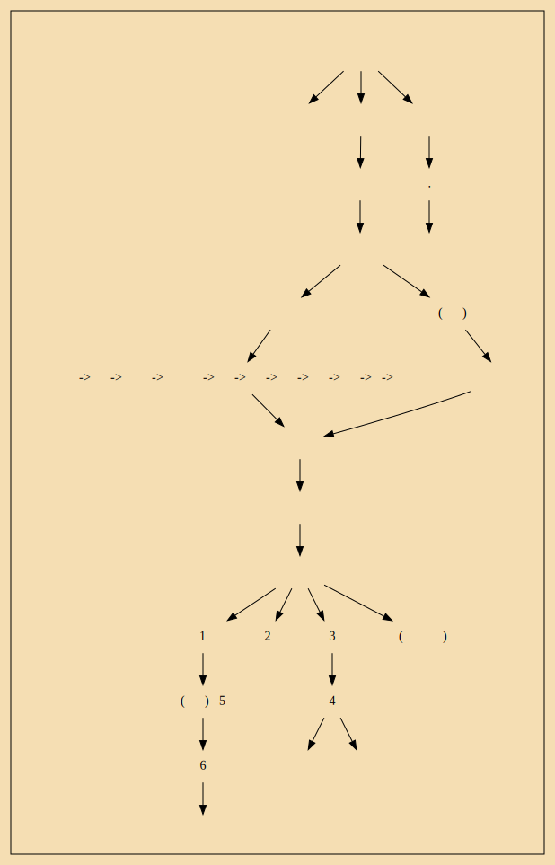
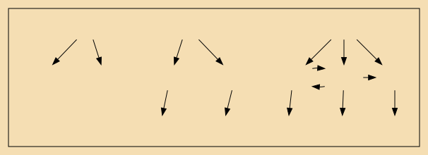

五年，伐鲁，鲁将师败。鲁庄公请献遂邑以平，桓公许，与鲁会柯而盟。鲁将盟，曹沬以匕首劫桓公於坛上，曰：“反鲁之侵地！”桓公许之。已而曹沬去匕首，北面就臣位。桓公後悔，欲无与鲁地而杀曹沬。管仲曰：“夫劫许之而倍信杀之，愈一小快耳，而弃信於诸侯，失天下之援，不可。”於是遂与曹沬 三败 所亡地 於鲁。诸侯闻之，皆信齐而欲附焉。七年，诸侯会桓公於甄，而桓公於是始霸焉
二十九年，桓公与夫人蔡姬戏船中。蔡姬习水，荡公，公惧，止之，不止，出船，怒，归蔡姬，弗绝。蔡亦怒，嫁其女。桓公闻而怒，兴师往伐
是时周室微，唯齐、楚、秦、晋为彊。晋初与会，献公死，国内乱。秦穆公辟远，不与中国会盟。楚成王初收荆蛮有之，夷狄自置。唯独齐为中国会盟 ...九合诸侯，一匡天下。昔三代受命，有何以异於此乎？吾欲封泰山，禅梁父
—— 骄傲了，飘了
苏秦与燕文公 夫人私通，惧诛，乃说王使齐为反间，欲以乱齐
昭王为隗改筑宫而师事之。乐毅自魏往，邹衍自齐往，剧辛自赵往，士争趋燕。燕王吊死问孤，与百姓同甘苦。
赵孝成王卒，悼襄王立。使乐乘代廉颇，廉颇不听，攻乐乘，乐乘走，廉颇奔大梁
召公奭可谓仁矣！甘棠且思之，况其人乎？
陈胡公满者，虞帝舜之後也； 杞东楼公者，夏后禹之後苗裔也，杞小微，其事不足称述。盛德之祀，必及百世。舜、禹馀烈，陈、杞是继
君偃十一年，自立为王。东败齐，取五城；南败楚，取地三百里；西败魏军，乃与齐、魏为敌国。盛血以韦囊，县而射之，命曰“射天”。淫於酒妇人。群臣谏者辄射之。於是诸侯皆曰“桀宋”。“宋其复为纣所为，不可不诛”。告齐伐宋。王偃立四十七年，齐湣王与魏、楚伐宋，杀王偃，遂灭宋而三分其地
太史公曰：高祖时诸侯皆赋，得自除内史以下，汉独为置丞相，黄金印。诸侯自除御史、廷尉正、博士，拟於天子。自吴楚反後，五宗王世，汉为置二千石，去“丞相”曰“相”，银印。诸侯独得食租税，夺之权。其後诸侯贫者或乘牛车也
[人事权力被消减,财税权力只留下"食租税":封建逐渐解体?]
良尝间从容步游下邳圯上，有一老父，衣褐，至良所，直堕其履圯下，顾谓良曰：“孺子，下取履！”良鄂然，欲殴之。为其老，彊忍，下取履。父曰：“履我！”良业为取履，因长跪履之。父以足受，笑而去。良殊大惊，随目之。父去里所，复还，曰：“孺子可教矣。後五日平明，与我会此。”良因怪之，跪曰：“诺。”五日平明，良往。父已先在，怒曰：“与老人期，後，何也？”去，曰：“後五日早会。”五日鸡鸣，良往。父又先在，复怒曰：“後，何也？”去，曰：“後五日复早来。”五日，良夜未半往。有顷，父亦来，喜曰：“当如是。”出一编书，曰：“读此则为王者师矣。後十年兴。十三年孺子见我济北，穀城山下黄石即我矣。”遂去，无他言，不复见。旦日视其书，乃太公兵法也。良因异之，常习诵读之
沛公入秦宫，宫室帷帐狗马重宝妇女以千数，意欲留居之。樊哙谏沛公出舍，沛公不听
汉王之将独韩信可属大事，当一面。即欲捐之
上在雒阳南宫，从复道望见诸将往往相与坐沙中语。上曰：“此何语？”留侯曰：“陛下不知乎？此谋反耳。”上曰：“天下属安定，何故反乎？
会高帝崩，吕后德留侯，乃彊食之，曰：“人生一世间，如白驹过隙，何至自苦如此乎！
上曰：“夫运筹筴帷帐之中，决胜千里外，吾不如子房。”余以为其人计魁梧奇伟，至见其图，状貌如妇人好女。盖孔子曰：“以貌取人，失之子羽。”留侯亦云。
陈涉少时，尝与人佣耕，辍耕之垄上，怅恨久之，曰：“苟富贵，无相忘。”庸者笑而应曰：“若为庸耕，何富贵也？”陈涉太息曰：“嗟乎，燕雀安知鸿鹄之志哉！
窦皇后兄窦长君，弟曰窦广国，字少君。少君年四五岁时，家贫，为人所略卖，其家不知其处。传十馀家，至宜阳，为其主入山作炭，暮卧岸下百馀人，岸崩，尽压杀卧者，少君独得脱，不死。自卜数日当为侯，从其家之长安。闻窦皇后新立，家在观津，姓窦氏。广国去时虽小，识其县名及姓，又常与其姊采桑堕，用为符信，上书自陈。窦皇后言之於文帝，召见，问之，具言其故，果是。又复问他何以为验？对曰：“姊去我西时，与我决於传舍中，丐沐沐我，请食饭我，乃去。”於是窦后持之而泣，泣涕交横下。侍御左右皆伏地泣，助皇后悲哀。乃厚赐田宅金钱，封公昆弟，家於长安——大难不死必有后福
於是乃选长者士之有节行者与居。窦长君、少君由此为退让君子，不敢以尊贵骄人
武帝初即位，数岁无子。平阳主求诸良家子女十馀人，饰置家。武帝祓霸上还，因过平阳主。主见所侍美人。上弗说。既饮，讴者进，上望见，独说卫子夫
卫氏枝属以军功起家，五人为侯
是时平阳主寡居，当用列侯尚主。主与左右议长安中列侯可为夫者，皆言大将军可。主笑曰：“此出吾家，常使令骑从我出入耳，柰何用为夫乎？”左右侍御者曰：“今大将军姊为皇后，三子为侯，富贵振动天下，主何以易之乎？”於是主乃许之。言之皇后，令白之武帝，乃诏卫将军尚平阳公主焉。
褚先生曰：丈夫龙变。传曰：“蛇化为龙，不变其文；家化为国，不变其姓。”丈夫当时富贵，百恶灭除，光耀荣华，贫贱之时何足累之哉
谚曰：“美女入室，恶女之仇。”
浴不必江海，要之去垢；马不必骐骥，要之善走；士不必贤世，要之知道；女不必贵种，要之贞好。传曰：“女无美恶，入室见妒；士无贤不肖，入朝见嫉。
武帝年七十，乃生昭帝。昭帝立时，年五岁耳。
为什么说话要言简意赅？
简单的话语，抽象程度高，概括能力越大越，精细，准确性越强，思考的速度也就越快。缺点是：专业性变强，通用性变差，容易写成小圈子，“知己”难觅啊。解决方法：多和不同行业，不同年龄的有巨大差异的人沟通，交流。多学多用，熟能生巧。见人说人话。
调研过程：
人工智能:NLP

end